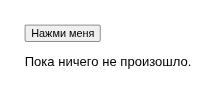

JavaScript: поведение страницы в браузере
HTML задаёт структуру, CSS — оформление, а JavaScript позволяет странице реагировать на действия пользователя и изменять содержимое прямо в браузере.
HTML описывает структуру, CSS — оформление, а JavaScript добавляет поведение: реакцию на клики, изменение содержимого без перезагрузки страницы, проверку формы перед отправкой. В отличие от Python на сервере, JavaScript выполняется прямо в браузере пользователя — на его компьютере, а не на вашем сервере.
Важно: JavaScript нужен не каждой странице. Простая статья, документ или блог со статьями хорошо работают на одном HTML (плюс CSS для оформления) — браузер отображает такую страницу без единой строчки JavaScript. JavaScript нужен именно там, где странице требуется реагировать на действия пользователя без нового запроса к серверу.
DOM — представление страницы, с которым работает JavaScript
Когда браузер разбирает HTML, он строит из тегов дерево объектов в памяти — DOM (Document Object Model). JavaScript не редактирует исходный текст HTML-файла — он находит нужный узел в этом дереве и меняет его:
<button id="knopka">Нажми меня</button>
<p id="tekst">Пока ничего не произошло.</p>
<script>
const knopka = document.getElementById("knopka");
const tekst = document.getElementById("tekst");
knopka.addEventListener("click", function () {
tekst.textContent = "Кнопку нажали!";
});
</script>
addEventListener("click", ...) подписывает функцию на
событие — клик по кнопке. Событий много: "click",
"submit" (отправка формы), "input"
(ввод текста) и другие — код выполняется только тогда, когда событие действительно
произошло.
const/function вместо привычных конструкций Python — но идеи те же: переменные, функции, условия, циклы. Если вы понимаете Python, освоить основы JavaScript будет заметно проще, чем начинать с нуля.Проверка формы прямо в браузере
JavaScript может проверить поле формы ещё до отправки — и сразу показать подсказку, не дожидаясь ответа сервера:
forma.addEventListener("submit", function (event) {
if (pole.value.trim() === "") {
event.preventDefault();
oshibka.textContent = "Поле не должно быть пустым";
}
});event.preventDefault() останавливает обычную отправку формы
— страница не перезагрузится, пока ошибка не исправлена. Ту же проверку всё равно
необходимо повторить и на сервере (раздел 22.31): пользователь может отправить
запрос вообще без браузера, в обход любого JavaScript.
fetch() — запрос к серверу без перезагрузки страницы
Функция fetch() отправляет HTTP-запрос из JavaScript и
получает ответ, не перезагружая страницу целиком:
fetch("/api/tasks")
.then(function (response) { return response.json(); })
.then(function (data) { console.log(data); });Что такое /api/tasks и что именно возвращает такой запрос —
в разделе 22.16.
Три языка вместе — HTML, CSS и JavaScript — и есть тот самый «фронтенд», который видит и с которым взаимодействует пользователь. Дальше в главе речь пойдёт о том, что происходит на сервере, — то есть о Python.